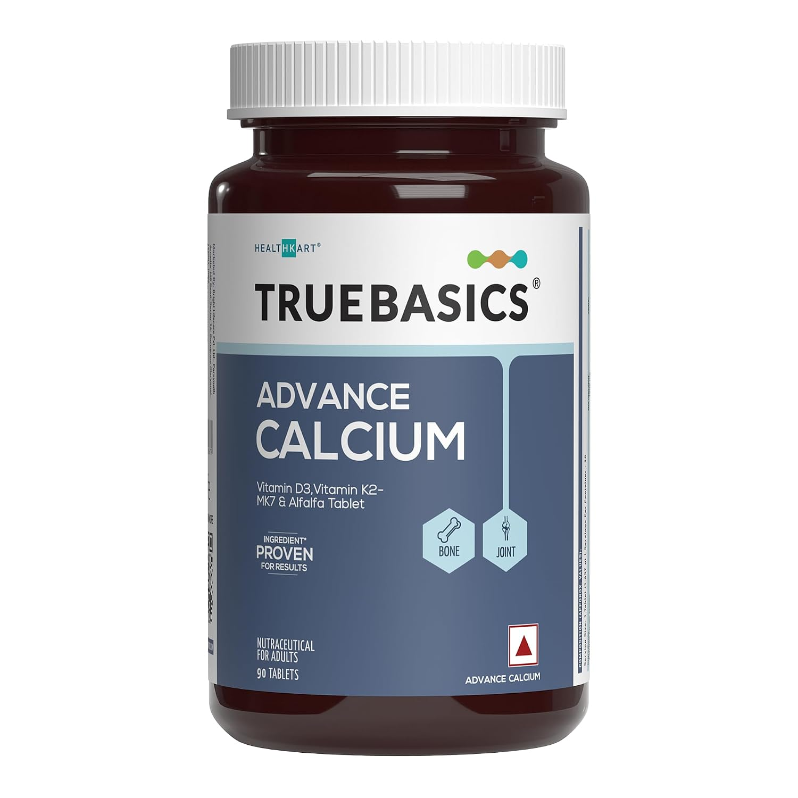

TL;DR
- Most inputs are free — sunlight, a walk, a real conversation
- Consistency over intensity: 10 minutes of sunlight every day beats one perfect wellness retreat a year
- Environment shapes mood more than willpower does — control the inputs, not just the outputs
- A few targeted supplements help at the margin; none substitute for sleep, movement, and light
- Evening matters as much as morning — the wind-down sets tomorrow's baseline
Morning
Sunlight within 30 minutes of waking
Get direct outdoor light — even overcast sky counts. Anchors your circadian clock, suppresses residual melatonin, and triggers the cortisol morning pulse that sets your energy curve for the day. No sunglasses for the first 10 minutes.
Free
A short walk — 10 to 20 minutes, no earphones
The combination of low-level movement, outdoor light, and silence is disproportionately effective. Not a workout. Bilateral motion has a mild anxiety-reducing effect independent of aerobic benefit.
Free
No phone for the first 10 minutes
The reactive mode engaged before your prefrontal cortex is fully online sets a threat-detection frame that lingers. Let the morning belong to you before it belongs to everyone else's agenda.
Free
Light Therapy Lamp (10,000 lux)
For days you can't get outdoor light — indoors, monsoon, winter mornings
20 minutes within an hour of waking mimics the circadian effect of outdoor light. Particularly useful in Indian winters or for late risers who are indoors all morning.
Daily Inputs
One real conversation per day
A non-text, synchronous exchange with another human — voice or face-to-face. Not a meeting, not a WhatsApp thread. Social connection is one of the most replicated predictors of wellbeing in the literature.
Free
Gratitude or journaling — 3 things, under 5 minutes
Not a feelings diary. Three specific things from the past 24 hours — the more specific the better. The point is training attentional bias, not catharsing. "I found parking immediately" beats "my family."
Free
Movement that isn't punishment
A walk counts. Stretching counts. The framing matters: exercise as something your body gets to do, not has to do. The mood effect of exercise is primarily driven by regularity, not load.
Free
Dotted Notebook (A5)
A physical journal removes the phone from the gratitude habit. Dot grid gives structure without ruling. What matters is it stays on the nightstand and isn't a screen.
Environment
Clear one small space each week
Not a full declutter — one drawer, one shelf, one corner. Visual chaos is a persistent low-level stressor. The act of clearing creates a brief sense of agency and completion.
Free
Time outdoors or near trees
Even urban greenery reduces cortisol measurably. 20 minutes in a park is enough to shift physiological stress markers. The mechanism is partly sensory and partly just being away from built environments.
Free
Warm light after sunset
Bright overhead lighting after 9pm suppresses melatonin onset. Shifting to warm, low-angle lamps is a 15-minute redesign that pays forward in sleep quality every night.
Free
Blue Light Blocking Glasses
Wearing these after sunset preserves melatonin onset. Useful if you can't change the lighting in your space — office, shared accommodation, late-night screens.
Evening
A wind-down routine — same 3 things each night
The content matters less than the consistency. Your nervous system learns to associate the sequence with sleep onset. Shower → book → magnesium works. Tea → stretching → journal works. Repeat until it's automatic.
Free
Hard stop on doomscrolling
The algorithmic feed is tuned to negative arousal. This is not a willpower problem — it's a design problem. A physical phone charger in a different room removes the activation cost of stopping.
Free
Consistent sleep time (±30 min)
Sleep regularity predicts mood more reliably than total sleep duration. Waking at the same time regardless of bedtime — even on weekends — is the single highest-leverage sleep habit.
Free

TrueBasics Magnesium Glycinate
The most bioavailable form — crosses the blood-brain barrier. Improves sleep onset, reduces nighttime waking, takes the edge off low-grade anxiety. Take with dinner or just before bed.
The Middle Path
Steady inputs, not vertical ambitions
The 45° idea: a steady upward trend — steeper than doing nothing, shallower than an extreme. This protocol isn't about forcing a smile or suppressing bad days. The goal is raising your floor, not chasing a peak. Morning light, real conversation, movement, a clean evening — these are the boring levers. Pull them every day. The trend takes care of itself.